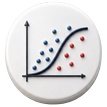

MACHINE LEARNING · PROGETTO 08
Progetto 09 · Machine Learning
Modello Machine Learning · Frode con regressione logistica
Analisi delle transazioni con carte di credito per stimare la probabilità di frode tramite regressione logistica. Il progetto utilizza informazioni su operazioni già classificate per addestrare un modello che identifica segnali associati al rischio e permette di analizzarne le previsioni.

CONTESTO E OBIETTIVO
Il progetto utilizza i dati delle operazioni con carte di credito per studiare quali caratteristiche compaiono più frequentemente nelle operazioni associate a frodi. Ogni transazione contiene dati che descrivono l’operazione e una classificazione che indica se è stata registrata come legittima o fraudolenta. Queste informazioni permettono di addestrare un modello su esempi noti e applicarlo poi ad altre transazioni.
L’obiettivo è stimare la probabilità di frode di ogni operazione e riconoscere quali variabili contribuiscono alla stima. La regressione logistica affronta entrambe le attività: classifica le transazioni e permette di interpretare la relazione tra le loro caratteristiche e l’esito previsto.
MODELLO E VALUTAZIONE
PREPARAZIONE DEI DATI
Per prima cosa si esaminano le variabili dell’insieme di transazioni e si organizzano le informazioni utilizzate dal modello. La preparazione comprende la pulizia dei dati, la preparazione delle variabili e il bilanciamento delle classi, un aspetto importante quando le frodi sono molto meno frequenti degli acquisti legittimi.
Questa preparazione rende i dati pronti per l’addestramento e la valutazione del modello. Le variabili selezionate descrivono ogni operazione, mentre la classificazione nota delle frodi funge da riferimento per imparare a distinguere i due tipi di casi.
CLASSIFICAZIONE CON REGRESSIONE LOGISTICA
La regressione logistica combina le caratteristiche di ogni transazione e stima una probabilità di frode tra 0 e 1. Ogni variabile contribuisce al calcolo tramite un coefficiente adattato durante l’addestramento. La funzione logistica converte questa combinazione in una probabilità per ogni operazione.
PROBABILITÀ STIMATA DI FRODE
p(x)=\frac{1}{1+e^{-(\beta_0+\sum_{j=1}^{k}\beta_jx_j)}}
p(x) è la probabilità stimata di frode. Le x rappresentano le caratteristiche della transazione; i coefficienti beta riflettono il contributo appreso di ogni variabile.
I coefficienti permettono di analizzare come ogni caratteristica si collega alla probabilità stimata, tenendo conto delle altre variabili. Si possono così riconoscere i segnali associati a un rischio maggiore o minore nelle transazioni analizzate.
VALUTAZIONE DELLE PREVISIONI
La valutazione confronta le previsioni con la classificazione nota delle operazioni. Per decidere quali transazioni segnalare come possibili frodi, la probabilità stimata viene confrontata con una soglia decisionale. Questo valore influenza quante frodi vengono rilevate e quanti acquisti legittimi generano segnalazioni da esaminare.
SOGLIA PER CLASSIFICARE LE TRANSAZIONI
\hat{y}=\begin{cases}1&\text{si }p(x)\geq t\\0&\text{si }p(x)<t\end{cases}
In questa regola generale, 1 identifica una segnalazione di possibile frode e 0 un’operazione classificata come legittima. t è la soglia decisionale, il cui valore specifico può essere scelto in base al criterio di valutazione.
Il progetto implementa il processo di modellazione in SPSS Modeler e comprende un’altra implementazione in Python. Le metriche e i grafici di valutazione permettono di valutare le prestazioni del modello e analizzare i segnali associati alle frodi con entrambi gli strumenti.
CONSEGNA E APPRENDIMENTO
Il lavoro presenta un modello supervisionato di regressione logistica applicato a operazioni con carte di credito, insieme alla preparazione delle variabili, alle previsioni e ai risultati della valutazione. La combinazione di SPSS Modeler e Python permette di seguire la procedura e verificare il contributo delle variabili alla classificazione.
Quando vengono aggiunte nuove transazioni con le stesse variabili, il modello può generare stime da confrontare in seguito con i casi confermati. Questo confronto permette di verificare se mantiene la capacità di rilevamento e decidere quando aggiornare l’addestramento.